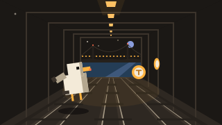
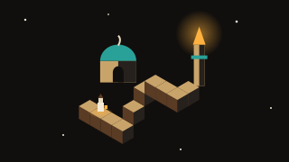

Kapadokya Yolları
Duraklatıldı
Ekran görüntüsü modunda göstergeler gizlenir; çıkmak için dokun ya da bir tuşa bas.
3D başlatılamadı
Bu tarayıcı WebGL desteklemiyor ya da kapalı. Başka bir tarayıcıda ya da donanım hızlandırmayı açarak dene.
Nasıl oynanır?
Kapadokya'nın gün batımında, peribacaları ve vadiler arasında kıvrılan bir yolda araba sürersin. Sadece sür modunda yol hiç bitmez; alacakaranlık yavaşça geceye döner, yıldızlar çıkar, köy pencereleri yanar ve farların yolu aydınlatır. Günlük ralli modunda herkes aynı gün aynı parkuru sürer: sekiz kontrol noktasından sırayla, iki direk arasından geçerek bitişe en kısa sürede ulaşmaya çalış. Her kontrol noktasında rekorunla farkın görünür; artı (+) yavaş, eksi (−) hızlı olduğun anlamına gelir. En iyi sürüşün bu cihazda hayalet araba olarak saklanır ve bir sonraki denemede yanında yarışır. Masaüstünde W, A, S, D ya da yön tuşlarıyla sürersin; boşluk el freniyle virajda kuyruğu savurursun, R seni yola geri koyar. Telefonda sağ alttaki pedal gaz, sol alttaki fren ve geridir; direksiyon için ekranın sol yarısında parmağını sağa sola kaydır ya da menüden telefonu eğerek sürmeyi aç. Yoldan çıkınca kum ve çimde araba yavaşlar. Tohum alanına bir sayı yazarak istediğin manzarayı yeniden üretebilir, arkadaşınla aynı yolu paylaşabilirsin.
Benzer oyunlar
-

AksiyonMarmaray Koşusu
Gece Marmaray tünelinde 3D üç şeritli sonsuz koşu: gelen trenlerden kaç, bariyerden zıpla, tabelanın altından kay, İstanbulkart jetonu topla, Boğaz'a çık.
-
 Aksiyon
AksiyonCam Ustası
Gece cam atölyesinde 3D koridor: dokun, bilye fırlat, camları kır. Çeşmibülbül camları, kayan paneller, kombo atışlar ve kırılmaması gereken nazar boncuğu kapıları.
-

BulmacaKayıp Minareler
Selçuklu ve Osmanlı mimarisinde izometrik 3D imkânsız geometri bulmacası. Parçaları döndür, köprüleri kaydır, bekçiyi minareye ulaştır ve sekiz minarenin ışığını yak.